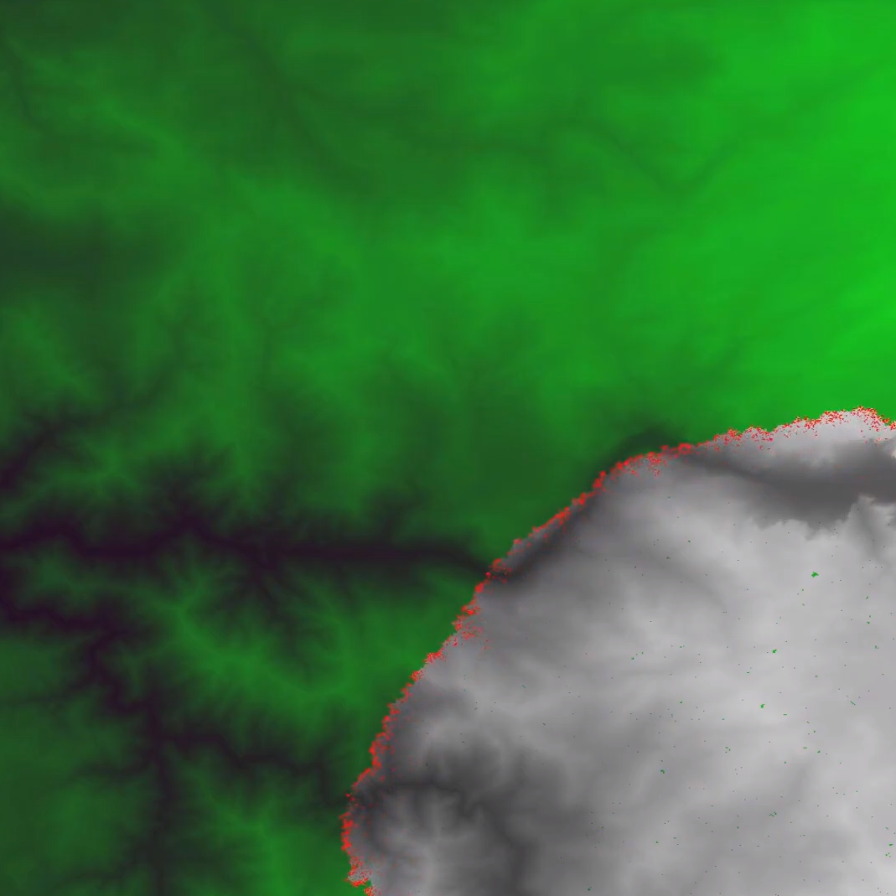

Forest Fire Simulation
We affectionately named our program BLAND🔥 after a site that helped us immensely with gathering our data, LANDFIRE
This was my final project for my Software Design class. My group and I decided that we wanted to make a project on simulating the spread of forest fires using a cellular automaton model. We wanted the project to be able to factor in real world data on topography, wind speed and wind speed for a specific area and time. We chose Yosemite Valley and the surrounding area as the main area for our program so we could theoretically use a past fire (i.e. the 2018 Ferguson Fire) to check the accuracy of our final project.
My group broke the overall program into three main areas: the actual simulation, the topography data, and the wind related data. I initially worked with another one of my group mates on getting a very basic simulation running without any external data and figuring out what data structures and other elements we would need to use. While my group mate continued to work on the simulation and refine it to be as accurate as he could, I moved onto attempting to get and integrate the topography data.
Getting the topography data was surprisingly difficult initially as it involved researching the best way to do this and then learning how to work Digital Elevation Model (DEM) files through the GDAL python library. After a lot of troubleshooting, I was able to take the data from the DEM files and convert them into matrices that our simulation could easily work with. From there I worked with the group member working on the actual simulation to integrate my data points into the overarching simulation.
This project seemed a lot more straightforward when the three of us started it so we were unable to refine the program to be as accurate as we would have liked. There was a lot of troubleshooting and debugging involved and a lot of our datasets weren't immediately compatible. This is where the majority of the work came in for me. Another thing was that many of the suggestions for working with topography data were outdated or no longer supported so that also took a good chunk of time to figure out how to make work.
Ultimately, we ended up with a project that we were very happy with. We initially went into the project with some stretch goals that we unfortunately did not manage to get to. These involved adding some more data sets (fuel type, roads, etc) and tweaking the base equations to make the overall simulation more accurate.